Pattern / Agentic
Global Chat Assistant
서비스 전역에서 사용자가 AI에게 질문하고 요청할 수 있는 공통 대화형 인터페이스입니다. 사용자는 현재 작업 흐름을 크게 벗어나지 않고 AI를 호출할 수 있으며, 질문, 요약, 분석, 생성 요청을 자연어로 입력합니다.

Live Demo
이번 분기 주요 리드 현황입니다. 리드 단계와 매출 기여 가능성, 관심 제품을 기준으로 정리했어요.
| 고객명 | 리드 단계 | 매출 기여 가능성 | 관심 제품 |
|---|---|---|---|
| 마이다스아이티 | 제안서 발송 | 높음 | 클라우드 솔루션 |
| 스마트웍스 | 초기 접촉 | 중간 | ERP 시스템 |
| 이노파워 | 미팅 완료 | 중간 | 백업 솔루션 |
| 블루테크 | 미팅 완료 | 중간 | 머신러닝 플랫폼 |
| 그린소프트 | 계약 협상 중 | 중간 | 스마트워크 시스템 |
| 하이넥스트 | 미팅 완료 | 낮음 | HR 데이터 분석 |
| 오렌지넷 | 미팅 완료 | 중간 | 데이터 시각화 툴 |
Overview
Global Chat Assistant는 사용자가 서비스 전역에서 AI를 호출해 질문하거나 요청할 수 있는 공통 대화형 인터페이스입니다. 특정 화면이나 기능에만 종속되지 않고, 사용자가 필요할 때 언제든 AI에게 자연어로 질문하거나 업무 요청을 할 수 있습니다. 답변은 단순 텍스트일 수도 있고, 생성된 결과물, 현재 화면 맥락을 반영한 응답, 후속 액션으로 이어질 수도 있습니다. 이 패턴은 AI를 제품 전체에서 접근 가능한 공통 인터페이스로 제공할 때 적합합니다.
이 분류를 선택하는 경우
| 선택 조건 | 설명 |
|---|---|
| 서비스 어디서든 AI를 호출해야 한다 | 특정 화면에만 묶이지 않고, 사용자가 전역적으로 AI에게 질문하거나 요청해야 하는 경우 |
| 자연어 기반 대화가 핵심이다 | 버튼 클릭이나 고정된 플로우보다, 사용자가 직접 질문하고 후속 요청을 이어가는 경험이 중요한 경우 |
| 요청 범위가 다양하다 | 요약, 설명, 분석, 생성, 추천 등 여러 유형의 요청을 하나의 AI 진입점에서 처리해야 하는 경우 |
| 후속 대화가 이어질 가능성이 높다 | 첫 답변 이후 추가 질문, 조건 변경, 재생성, 구체화 요청이 자연스럽게 이어지는 경우 |
| 공통 AI 진입점이 필요하다 | 제품 내 여러 기능에서 동일한 AI Assistant를 호출하는 구조가 필요한 경우 |
이 템플릿을 사용하지 않는 경우
| 선택하지 않는 경우 | 대신 고려할 패턴 |
|---|---|
| 특정 작업이나 산출물을 완성하기 위한 전용 작업공간이 필요하다 | Dedicated Agent Workspace |
| 현재 화면을 유지한 채 측면에서 AI가 지속적으로 보조해야 한다 | Contextual Agent Panel |
| 선택한 텍스트나 입력 필드 근처에서만 짧게 AI가 개입하면 된다 | Embedded AI Elements |
| 사용자가 AI 작업의 진행 상태를 주로 확인해야 한다 | Background Task Monitor |
Key Characteristics
| 구분 | 내용 |
|---|---|
| 진입 방식 | 전역 버튼, 플로팅 버튼, 헤더 아이콘, 단축키, 추천 질문 |
| 입력 방식 | 자연어 질문, 명령, 요청, 조건 입력 |
| 응답 방식 | 텍스트 답변, 구조화된 응답, 결과물 생성, 관련 액션 제안 |
| 컨텍스트 활용 | 현재 화면, 선택 객체, 문서, 데이터 등을 선택적으로 참조 |
| 사용자 흐름 | 질문 → 응답 → 후속 질문 → 재생성 또는 적용 |
| 주요 가치 | 제품 전반에서 일관된 AI 접근성과 대화형 문제 해결 제공 |
주요 예시 레퍼런스
실제 제품에서 Global Chat Assistant 패턴이 어떻게 구현되는지 보여주는 대표 사례입니다.
ChatGPT
사용자가 하나의 전역 대화 화면에서 자연어로 질문하고, AI가 텍스트 답변·구조화된 응답·코드·파일 기반 답변 등을 제공합니다. 최근 대화 목록, 하단 고정 입력창, 파일 첨부, 모델 선택, 음성 입력 등 대화형 AI의 기본 레이아웃 요소를 폭넓게 갖추고 있습니다. Canvas 기능을 통해 단순 대화를 넘어 글쓰기·코딩 결과물을 별도 작업 영역에서 함께 다루는 구조도 제공합니다.
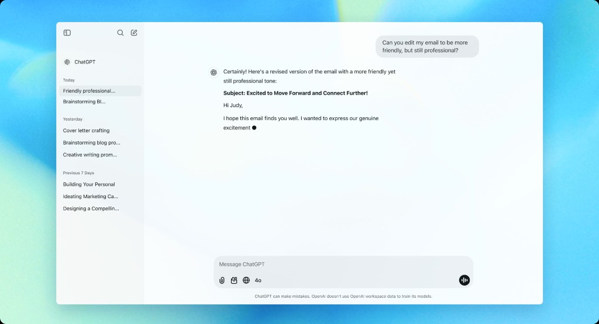
Microsoft 365 Copilot Chat
Microsoft 365 안에서 업무용 AI Chat으로 제공되며, 사용자가 자연어로 초안 작성, 요약, 분석, 아이디어 탐색 같은 업무 요청을 입력할 수 있습니다. 추천 프롬프트 카드와 업무 생산성 중심의 시작 화면을 제공해, 사용자가 무엇을 요청할 수 있는지 빠르게 파악하게 합니다.
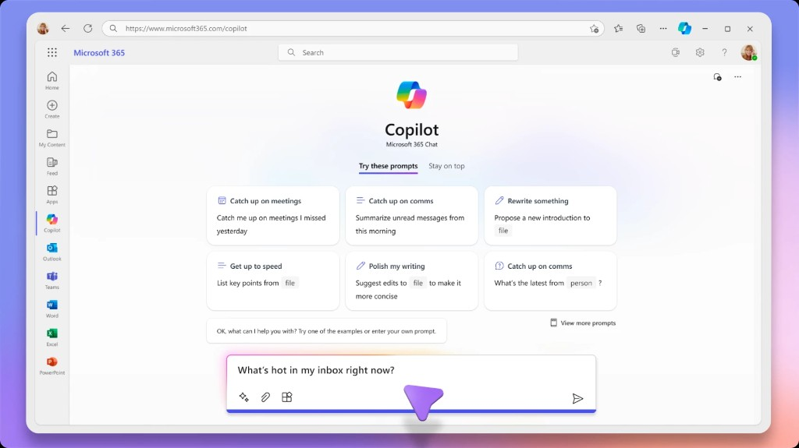
Sana.ai
기업 내부 지식과 연결된 AI Assistant로, 사용자가 제품 스펙, 정책, 업무 정보에 대해 질문하면 관련 지식 소스를 바탕으로 답변하고 출처를 함께 보여줍니다. 파일을 채팅에 직접 업로드하거나, 지식 소스를 선택해 응답 정확도를 높이는 구조를 제공해 지식 기반 Global Chat Assistant의 사례로 볼 수 있습니다.
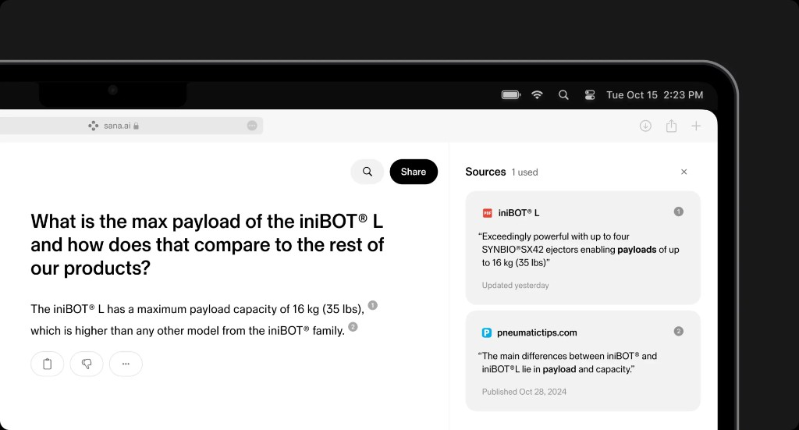
Basic Layout Structure
Global Chat Assistant는 사용자가 서비스 어디서든 AI를 호출하고 대화를 이어갈 수 있도록, 공통적인 대화 화면 구조를 가집니다. 하위 분기에 따라 Canvas나 Context Preview가 추가될 수 있지만, 기본 골격은 Sidebar, Conversation Area, Prompt Composer, Utility Actions로 구성됩니다.
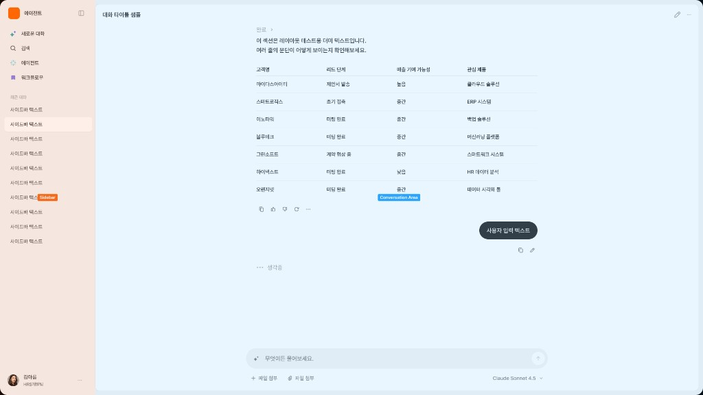
레이아웃 원칙
| 원칙 | 설명 |
|---|---|
| 대화 중심성 | 화면의 중심은 항상 사용자의 요청과 AI 응답이 오가는 대화 영역입니다. |
| 전역 접근성 | 특정 업무 화면에 종속되지 않고, 서비스 공통 AI 진입점처럼 동작해야 합니다. |
| 입력 지속성 | 사용자가 언제든 후속 질문을 입력할 수 있도록 Prompt Composer는 하단에 안정적으로 배치합니다. |
| 맥락 확장성 | 필요에 따라 Canvas Panel이나 Context Preview가 확장될 수 있어야 합니다. |
| 작업 연속성 | 최근 대화, 새 대화, 검색 기능을 통해 사용자가 이전 대화와 현재 작업을 이어갈 수 있어야 합니다. |
| 액션 최소화 | 기본 화면에서는 대화를 방해하지 않도록 주요 액션만 노출하고, 보조 액션은 더보기나 하위 메뉴로 정리합니다. |
Variants
Global Chat Assistant는 응답 결과를 어디까지 다루는지, 현재 맥락을 얼마나 보여줘야 하는지에 따라 하위 UI가 나뉩니다.
| 하위 분기 | 한 줄 정의 | 선택 기준 |
|---|---|---|
| Chat Only | 질문과 답변 중심의 기본 대화형 UI | 별도 작업 영역이나 컨텍스트 미리보기가 필요 없을 때 |
| Chat + Context Preview | AI가 참고하는 현재 화면이나 선택 객체를 함께 보여주는 UI | AI 답변이 현재 화면, 문서, 데이터 맥락에 의존할 때 |
| Chat + Canvas Panel | 대화 결과를 별도 영역에서 보고 편집하는 UI | AI 결과가 문서, 계획, 분석 결과처럼 산출물 형태일 때 |
Chat Only
사용자가 질문하고 AI가 답변하는 가장 기본적인 전역 챗 UI로, 범용 질문, 간단한 설명, 빠른 요약, 짧은 추천에 적합합니다.
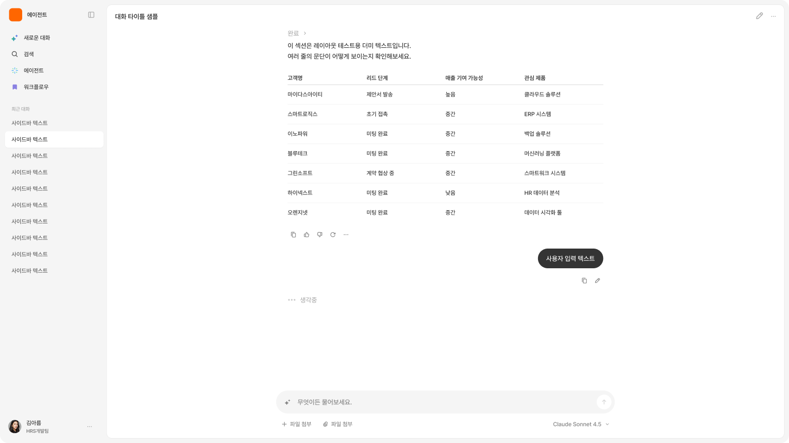
Chat + Context Preview
AI가 답변에 참고하는 현재 화면, 선택 객체, 문서, 데이터를 함께 보여주는 UI로, AI 답변이 현재 화면이나 특정 데이터 맥락에 의존하는 경우 보조 패널을 활용합니다.
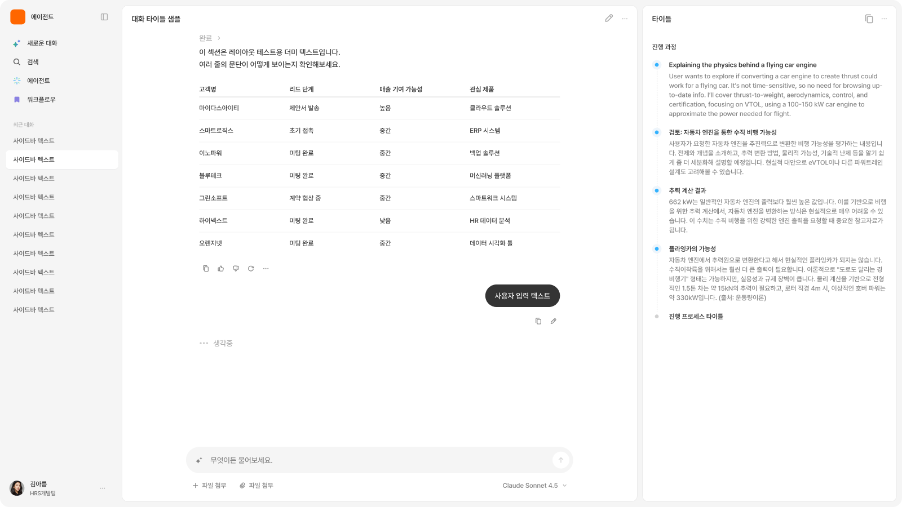
Chat + Canvas Panel
대화 영역과 결과 작업 영역이 함께 제공되는 UI로, AI가 생성한 결과물을 별도 영역에서 확인해야 하는 경우 사용합니다.
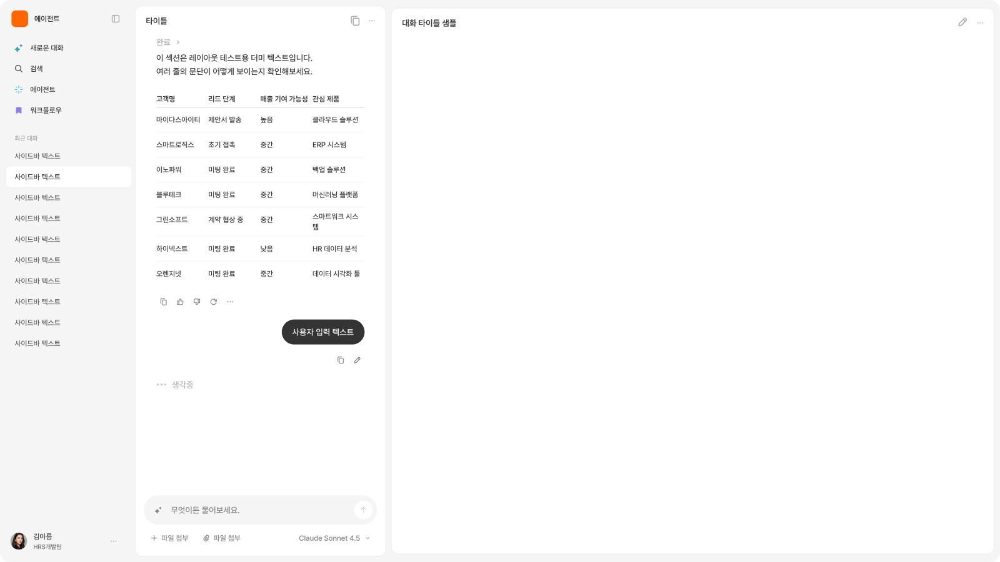
Interaction
Trigger - Global AI Call
사용자가 전역 버튼, 플로팅 버튼, 사이드바, 단축키 등을 통해 AI Assistant를 호출합니다.
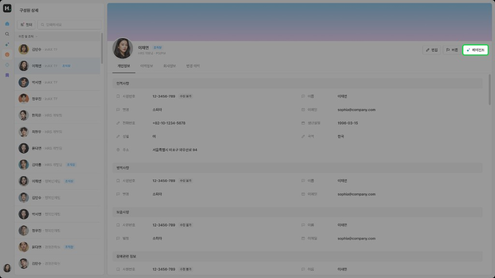
전역 에이전트를 호출하는 버튼, 내비게이션 요소를 통해 AI Assistant를 호출합니다.
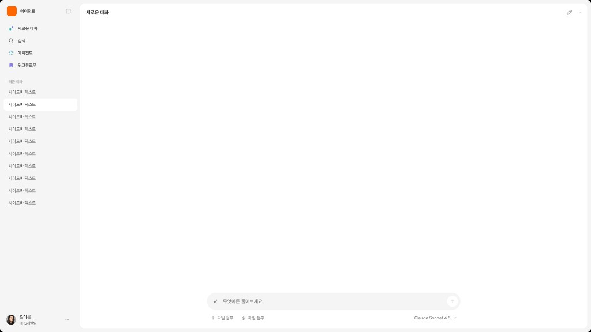
호출된 AI Assistant는 별도의 전용 공간(새 탭, 새 창 등)에 UI가 구성됩니다. UI는 자연어 기반 상호작용이 중심이 되는 형태입니다.
Input - Natural Language Request
사용자가 질문, 요청, 명령, 조건을 자연어로 입력합니다. 필요에 따라 파일, 현재 화면, 선택 객체 같은 맥락이 함께 포함될 수 있습니다.
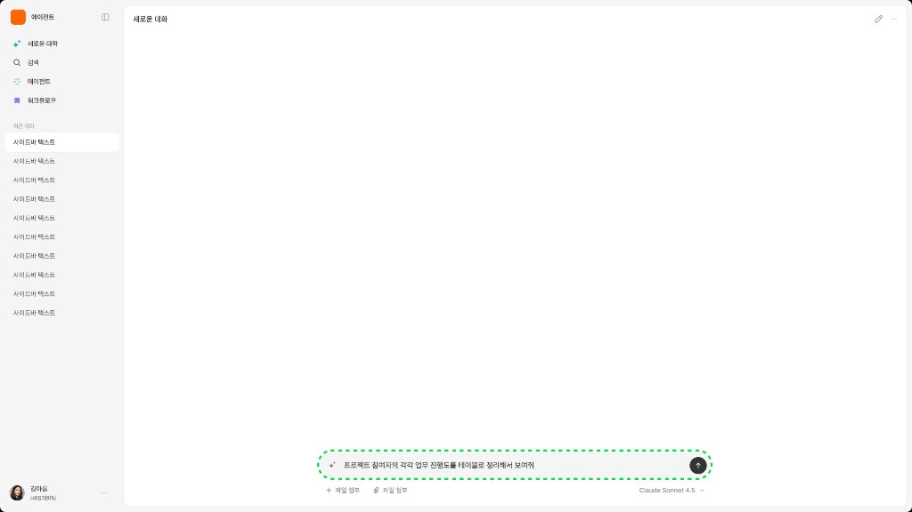
사용자는 Composer와 상호작용하여 질문, 요청, 명령, 조건 등을 자연어로 입력합니다.
Output - Conversational Response
AI가 텍스트 답변, 요약, 추천, 분석 결과, 구조화된 응답 등을 대화 형태로 제공합니다.
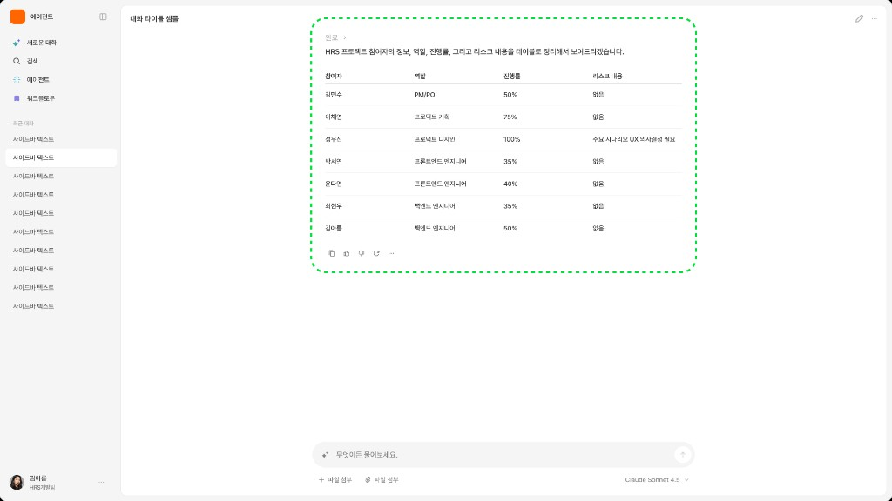
사용자의 요청사항에 따라 대화 기반의 응답을 제공합니다.
Follow up - Continue or Act
사용자는 후속 질문을 이어가거나, 응답을 복사·다시 생성·저장·적용하는 등 다음 행동을 수행합니다.
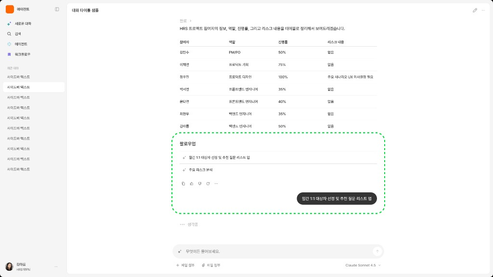
AI Assistant는 사용자의 요청 맥락에 따른 추천 후속 질문을 제공할 수 있습니다. 이와 별개로 사용자가 자연어로 후속 질문을 요청할 수 있습니다.